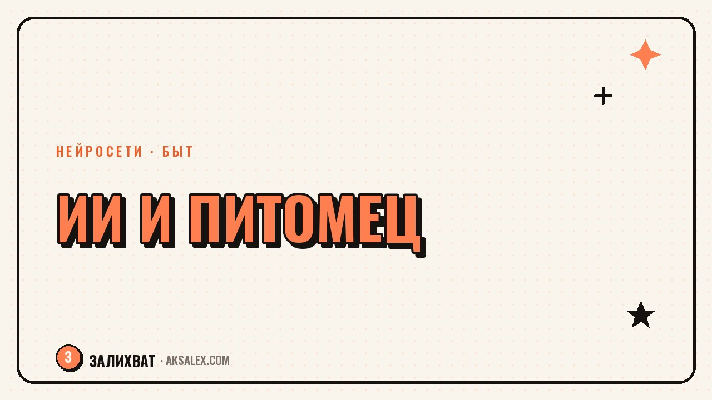

Нейросети для домашних животных: уход и дрессировка

У тебя дома живёт существо, которое не умеет объяснить, что его беспокоит, а усвоить новую команду хочет не быстрее, чем ты сам усваивал английские неправильные глаголы. Нейросети не заменят ветеринара и не выдрессируют собаку за тебя, но они отлично справляются с рутиной вокруг питомца: систематизируют наблюдения, превращают расплывчатое 'что-то не так' в список вопросов для врача и собирают план тренировок под конкретную породу и возраст. Разберём, где ИИ реально экономит время хозяину кота или собаки, а где нужно идти к живому специалисту.
Что нейросеть умеет с поведением питомца, а что нет
Самый частый запрос владельцев - 'что значит, когда собака делает то-то'. Нейросеть вроде ChatGPT или Claude не видит твоего питомца и не ставит диагноз, но она хорошо работает с описанием: ты расписываешь ситуацию подробно (что делал пёс, сколько длилось, что было до и после), а она даёт список вероятных причин и подсказывает, какие детали важны для наблюдения дальше.
Это не медицинская консультация, а структурирование твоих собственных наблюдений. Если кошка перестала есть второй день подряд, нейросеть не скажет точно, в чём дело, но поможет собрать для ветеринара четкий список: когда началось, был ли стресс в доме, менялся ли корм, есть ли рвота или изменения в поведении туалета. С таким списком приём у врача проходит быстрее и толковее.
Промпт, который реально работает
Вместо 'моя собака грызёт мебель, что делать' дай нейросети контекст: породу, возраст, сколько часов она одна дома, когда началось поведение, что менялось в доме примерно в то же время. Чем конкретнее вопрос, тем конкретнее и полезнее ответ - это касается любой нейросети, не только по теме животных.
Нейросеть - это не ветеринар по переписке. Она помогает тебе собрать мысли и вопросы, а решения по здоровью питомца всё равно принимает живой врач, который видит анализы и самого пациента.
Дрессировка: как собрать план под свою собаку
С дрессировкой у нейросетей получается лучше, чем с диагностикой, потому что здесь речь о методике, а не о индивидуальной физиологии. Ты описываешь возраст собаки, породу, что она уже умеет и какую команду хочешь поставить следующей - и получаешь пошаговый план на несколько недель с перерывами на закрепление.
Полезно просить не просто 'план дрессировки', а конкретную механику: сколько минут в день, сколько повторов, как усложнять задачу, если собака справляется легко, и что делать, если не получается третий день подряд. Нейросеть не стесняется расписать это по дням, а тебе остаётся следовать и корректировать по факту.
- Опиши исходную точку: возраст, порода, темперамент, что уже знает
- Назови одну цель на 2-3 недели, а не пять сразу
- Попроси разбить тренировку на короткие сессии по 5-10 минут
- Уточни, как хвалить и когда переходить к следующему шагу
- Спроси про типичные ошибки хозяев именно с этой командой
Щенок, взрослая собака и кошка - разные задачи
С щенком работа идёт через короткие игровые сессии и частое повторение, с взрослой собакой со сложившимися привычками - через постепенную замену нежелательного поведения на желательное. С кошками классическая дрессировка вообще работает иначе: через кликер и исключительно положительное подкрепление, и об этом тоже стоит спросить нейросеть отдельно, не пытаясь применить собачьи схемы.
Питание, меню и расчёт порций
Нейросеть может прикинуть примерный объём корма по весу и активности животного, но точные цифры по калориям и составу рациона - это всё равно зона ветеринарного диетолога, особенно если у питомца есть заболевания почек, диабет или аллергия. Используй ИИ как черновик, а не как финальное назначение.
Хорошо работает запрос на составление графика кормления при смене режима - например, когда щенок переходит с четырёх кормлений в день на два, или когда стареющая кошка нуждается в более частых, но мелких порциях. Нейросеть разложит переход по неделям так, чтобы не было резкого стресса для пищеварения.
| Задача | Справится нейросеть | Нужен специалист |
|---|---|---|
| Составить график смены корма | Да, черновик плана | Проверить при хронических болезнях |
| Разобрать подозрительное поведение | Да, список вопросов и версий | Да, для диагноза и анализов |
| Собрать план дрессировки команды | Да, неплохо справляется | При агрессии - очно к зоопсихологу |
| Расшифровать результаты анализов | Нет, не её компетенция | Да, только ветеринар |
| Подобрать клинику рядом по отзывам | Частично, как агрегатор идей | Финальный выбор - твой |
Фото и контент с питомцем без лишних хлопот
Если ты ведёшь страницу своего питомца или просто хочешь красивые кадры, нейросети для обработки фото (Lightroom AI, Remini и похожие) убирают шум с тёмных снимков, выравнивают цвет и могут аккуратно подрезать кадр под разные форматы соцсетей. Это удобно, когда снимаешь на телефон при плохом свете - а с животными свет редко бывает идеальным, они не ждут, пока ты настроишь кадр.
С текстами для подписей под фото тоже можно подключить нейросеть - описать ситуацию на фото и попросить несколько вариантов подписи в разном тоне: от шутливого до информативного, если ты рассказываешь о породе или привычках питомца.
Где искать помощь очно: пределы ИИ
Есть три ситуации, где нейросеть - плохой советчик, и это нужно проговорить прямо. Первая - любые острые симптомы: отказ от еды дольше суток, кровь, судороги, резкое изменение поведения. Здесь счёт идёт на часы, и нужен очный осмотр, а не переписка с чат-ботом.
Вторая - агрессия к людям или другим животным. Это зона зоопсихолога, который видит собаку в движении, оценивает язык тела и работает с хозяином лично, а не по описанию в чате. Третья - дозировки лекарств и БАДов: нейросеть может ошибиться с весом или совместимостью препаратов, а это прямой риск для здоровья питомца.
- Острые симптомы - сразу к ветеринару, без переписки с ботом
- Агрессия - очно к зоопсихологу или кинологу с опытом коррекции
- Дозировки и лекарства - только по назначению врача
- Хронические болезни - план питания согласуй с диетологом
- Рутина (график, дрессировка, контент) - здесь ИИ в помощь
Частые вопросы
Может ли нейросеть поставить диагноз питомцу по описанию симптомов?
Нет, и воспринимать её ответ как диагноз нельзя. Она помогает структурировать наблюдения и собрать список вопросов для ветеринара, но решение о здоровье животного всегда остаётся за врачом, который видит пациента и результаты анализов.
Какая нейросеть подходит для составления плана дрессировки собаки?
Подойдёт любой текстовый ассистент общего назначения вроде ChatGPT или Claude - специализированных сервисов именно под дрессировку почти нет. Главное - дать подробный контекст про породу, возраст и текущие навыки, тогда план получится конкретным.
Стоит ли доверять нейросети расчёт порций корма для кота или собаки?
Как черновик - да, как финальное решение - нет. Нейросеть ориентируется на общие нормы по весу и активности, но при любых заболеваниях или особом рационе лучше проверить расчёт с ветеринарным диетологом.
Помогают ли нейросети разобраться в агрессивном поведении собаки?
Нейросеть может подсказать общие версии и вопросы для наблюдения, но агрессия - это тема для очной работы с кинологом или зоопсихологом. Такое поведение слишком сильно зависит от контекста, который невозможно полностью передать текстом.
Можно ли с помощью ИИ подобрать ветеринарную клинику рядом с домом?
Нейросеть может помочь собрать и сравнить информацию из открытых источников и отзывов, но финальный выбор клиники стоит делать по личному опыту знакомых или прямому звонку с вопросами о конкретной ситуации твоего питомца.
Раз тема оказалась полезной, вот что почитать следующим. Нейросети вместо репетитора: разбор теории, тренажёр заданий и проверка сочинений для ЕГЭ и ОГЭ.
Читать статью →а не вручную